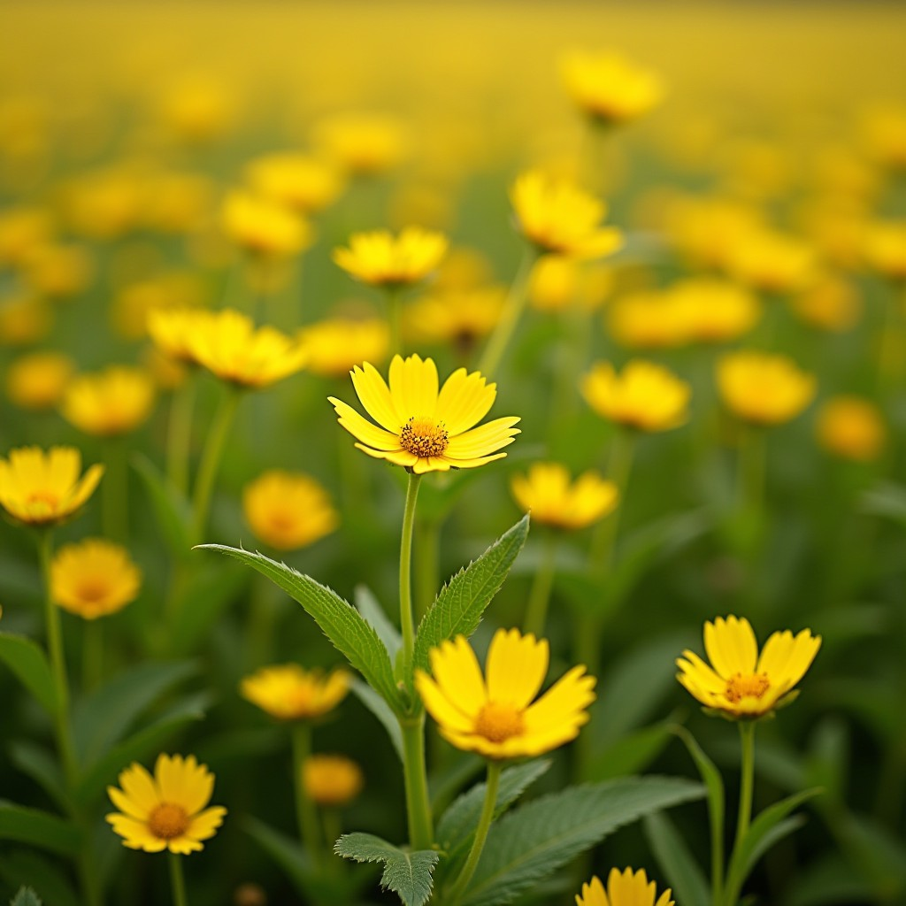
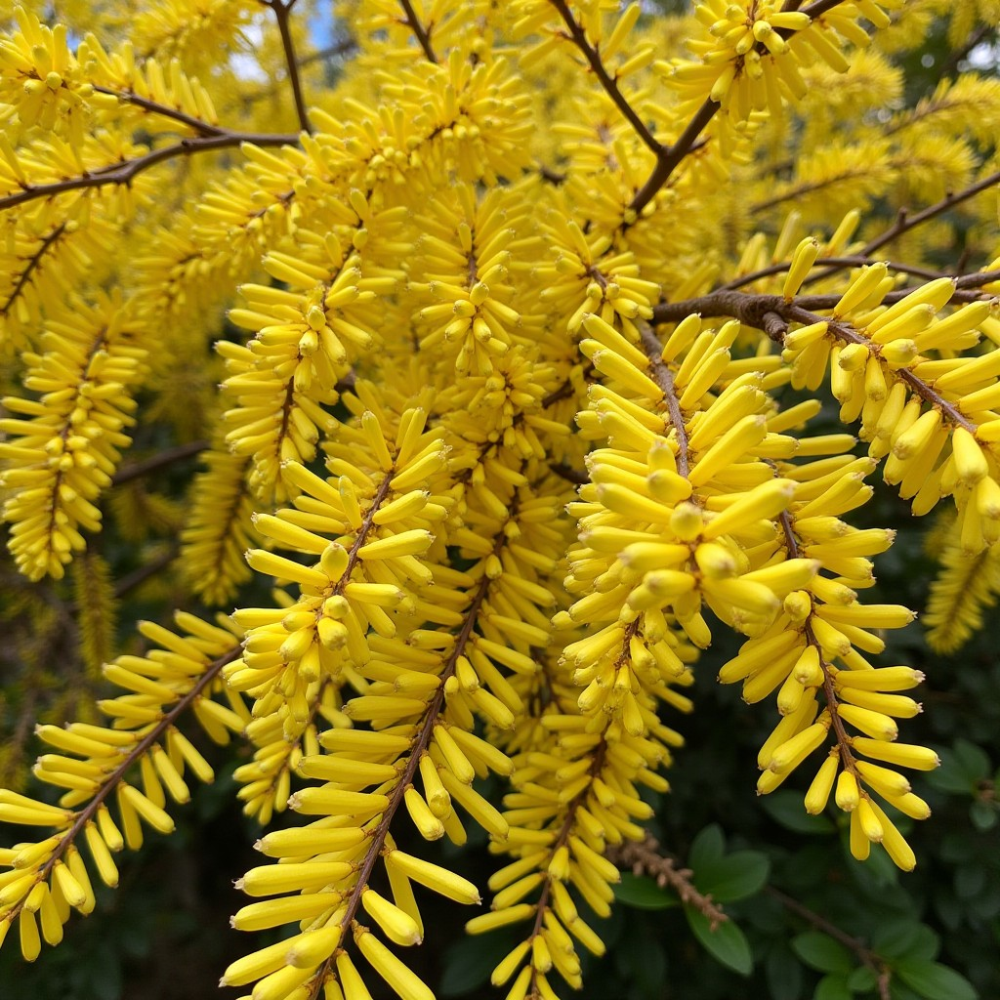
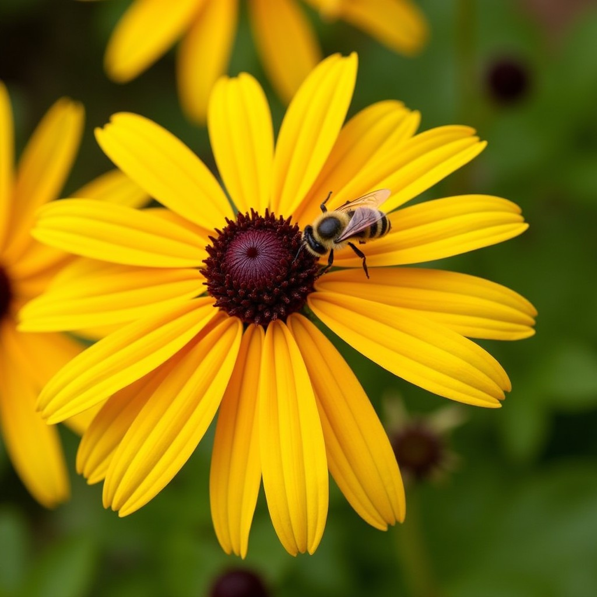
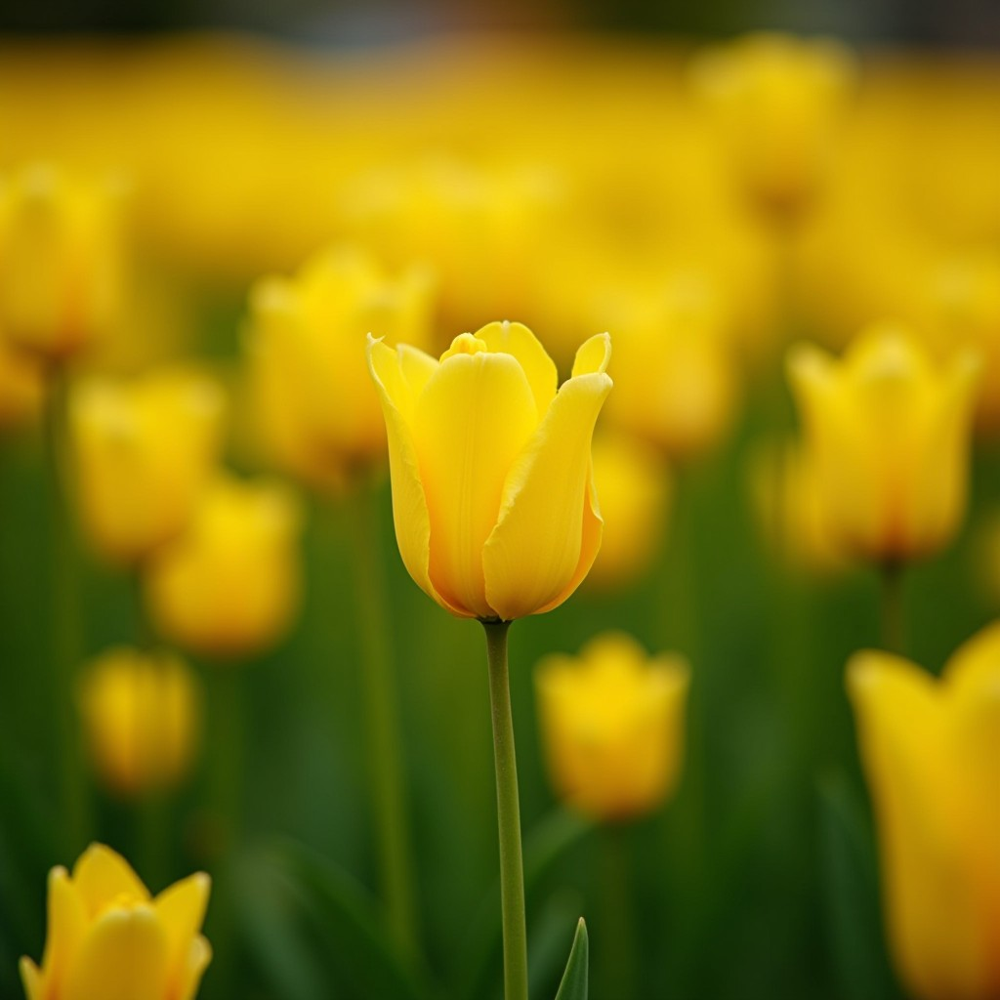
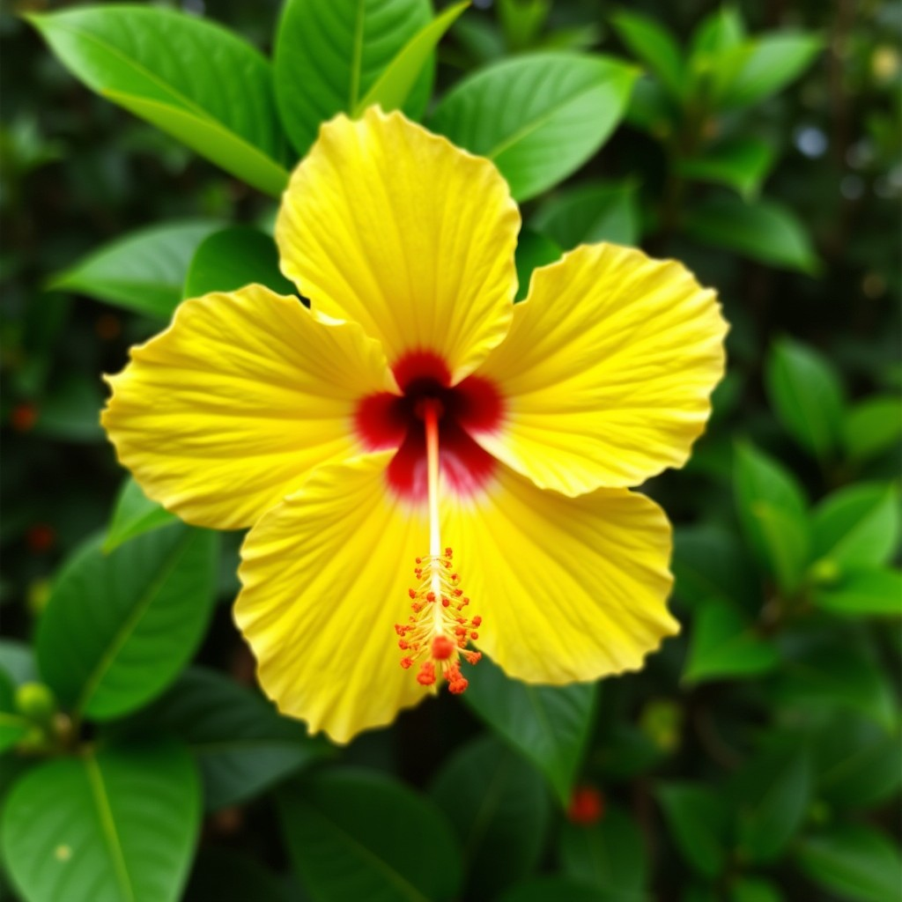

Sunflower
Sunflower
Symbol of adoration, admiration, and loyalty. In love, it represents a passionate and enduring love.
For you, sunflower of my heart, you are the sun that illuminates my life. Your burning love fills me with joy and hope.
 Daffodil
Daffodil
Represents new life, hope, and rebirth. In love, it symbolizes the beginning of a new relationship.
Daffodil, you are the promise of a new dawn in my life. Your delicate beauty fills me with hope and love.
 ButtercupSymbolizes joy, innocence, and beauty. In love, it represents a childish and pure love.
Buttercup, you are the spark of joy that illuminates my day. Your innocence fills me with love and happiness.
 Dandelion
Dandelion
Represents freedom, hope, and joy. In love, it symbolizes a free and carefree love.
Dandelion, you are the freedom my soul craves. Your carefree joy fills me with love and hope.
 ForsythiaSymbolizes friendship, hope, and the arrival of spring. In love, it represents a lasting and hopeful love.
Forsythia, you are the hope that renews my heart. Your radiant beauty fills me with love and joy.
 CoreopsisRepresents joy, beauty, and admiration. In love, it symbolizes a love filled with admiration and respect.
Coreopsis, you are the star that illuminates my path. Your silent admiration fills me with love and respect.
 Black-eyed Susan
Black-eyed Susan
Symbolizes justice, loyalty, and trust. In love, it represents a strong and lasting love.
Black-eyed Susan, you are the loyalty that always accompanies me. Your unwavering love fills me with trust and security.
 Yellow Rose
Yellow Rose
Represents friendship, joy, and hope. In love, it symbolizes a platonic love or a love that is blossoming.
Yellow Rose, you are the hope that illuminates my future. Your nascent love fills me with excitement and joy.
 Yellow TulipSymbolizes hope, happiness, and perfect love. In love, it represents an ideal and joyful love.
Yellow Tulip, you are the happiness I long for in my life. Your ideal love fills me with peace and satisfaction.
 Yellow HibiscusRepresents beauty, passion, and wealth. In love, it symbolizes an intense and passionate love.
Yellow Hibiscus, you are the passion that burns in my heart. Your intense love fills me with desire and excitement.